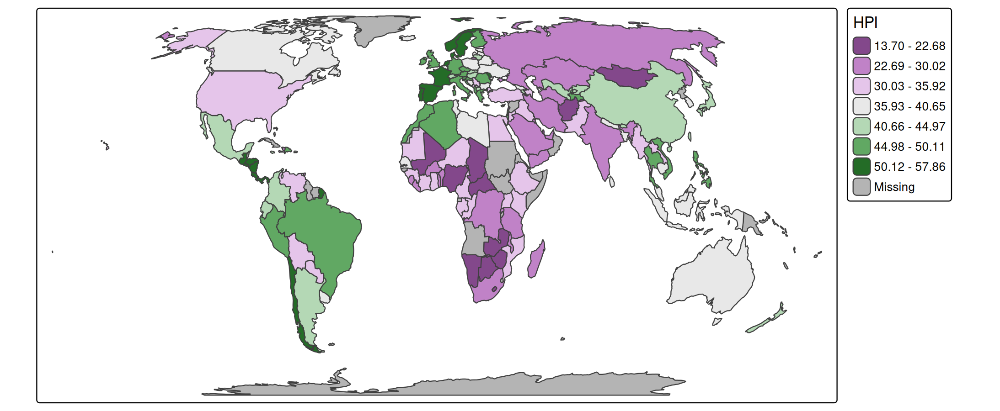

About the data
A spatial data object contained in tmap is called World. It is a data frame with a row for each country. The columns are the following data variables plus an additional geometry column which contains the geometries (see sf package):
names(World)
#> [1] "iso_a3" "name" "sovereignt" "continent" "area"
#> [6] "pop_est" "pop_est_dens" "economy" "income_grp" "gdp_cap_est"
#> [11] "life_exp" "well_being" "footprint" "HPI" "inequality"
#> [16] "gender" "press" "geometry"We specify this object with tm_shape (see other vignette) and for convenience assign it to s:
s = tm_shape(World, crs = "+proj=eqearth")Scales: numeric data
Each visual variable, e.g. fill in tm_polygons can represent a data variable:
s + tm_polygons(fill = "HPI")
A scale defines how to map the data values to visual values. Numeric data variables (e.g. "HPI" which stands for Happy Planet Index) are by default mapped with a class interval scale to the polygon fill. This can be set explicitly with tm_scale_intervals, via which the intervals can be specified, as well as the visual values (in this case polygon fill colors):
s + tm_polygons(
fill = "HPI",
fill.scale = tm_scale_intervals(
style = "fisher", # a method to specify the classes
n = 7, # number of classes
midpoint = 38, # data value mapped to the middle palette color
values = "pu_gn_div" # color palette;
# run cols4all::c4a_gui() to explore color palettes
))
The style parameter within tm_scale_intervals has a variety of options, including:
fixedsdequalprettyquantilefisherjenks
To specify the classification breaks manually, use style = "fixed" and specify the breaks using breaks = c(0,10,20,30,40,50,60):
s + tm_polygons(
fill = "HPI",
fill.scale = tm_scale_intervals(
n = 6, # for n classes
style = "fixed",
breaks = c(0,10,20,30,40,50,60), # you need n+1 number of breaks
values = "pu_gn_div"
))An alternative for numeric data variables is the continuous scale:
s +
tm_polygons(
fill = "HPI",
fill.scale = tm_scale_continuous(
limits = c(10, 60),
values = "scico.hawaii"))
Scales: categorical data
s +
tm_polygons(
fill = "economy",
fill.scale = tm_scale_categorical())
s +
tm_polygons(
fill = "income_grp",
fill.scale = tm_scale_ordinal(values = "matplotlib.summer"))